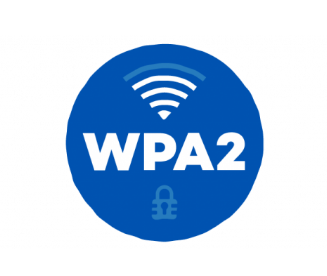

Wi-Fi Protected Access 2 (WPA2)
Introduced 2004 — legacy standardWPA2 is a legacy wireless security protocol introduced in 2004 that uses AES encryption to secure Wi-Fi networks.
Still widely deployed, but WPA3 is the current recommended standard.